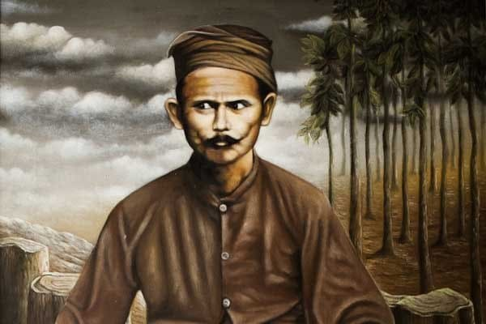

In the late 19th century, people suffered because of colonial policies, especially the heavy taxes (land tax, crop tax) and forced labor practices (rodi).

Raden Kohar, later known as Samin Surosentiko, was a central figure from Ploso Kedhiren Village, Blora. He taught a different type of resistance—peaceful resistance.

This is the core of the Samin Movement. Forms of resistance carried out by Samin followers included: • Refusing to pay taxes to the Dutch government. • Refusing to participate in forced labor (rodi).

The Samin struggle brought significant impacts: • For the Samin people: It strengthened confidence, dignity, and independence without violence. • For the Dutch…